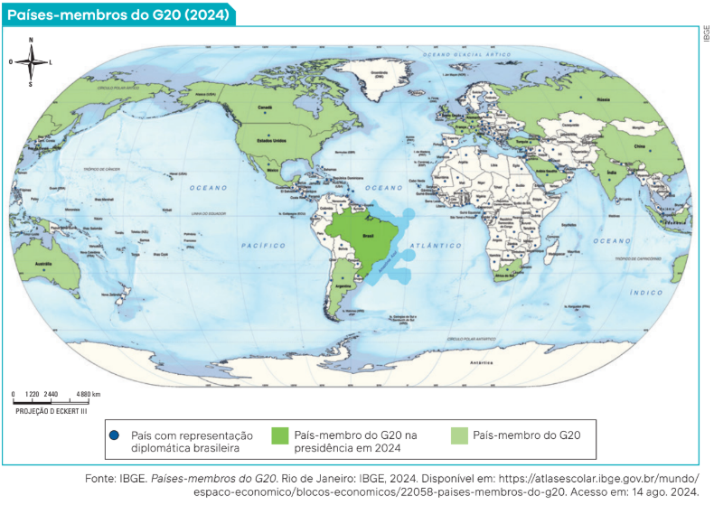

Desde publicações realizadas em 2018, o Instituto Brasileiro de Geografia e Estatística
(IBGE) vem desenvolvendo mapas-múndi em que o Brasil aparece ao centro. Em 2024, um
novo mapa foi elaborado e divulgado, apresentando os países-membros do G20 – grupo
formado pelas 19 maiores economias do mundo, além da União Africana e da União Europeia.

Observando o mapa, Paulo Marcio Leal de Menezes, professor da Universidade Federal do Rio de Janeiro, declarou que essa produção cartográfica “tira essa visão eurocêntrica” dos mapas tradicionais, conhecidos e utilizados
pela comunidade científica. Com isso, Menezes quer dizer que, nesse mapa, o posicionamento do Brasil desafia
as convenções e a visão de mundo baseadas em parâmetros europeus.
Como assim? Pode-se fazer uma mudança no pensamento cartográfico
adotado por uma comunidade científica?
Começamos este capítulo informando sobre essa inusitada decisão
para ilustrar que algumas ideias, convencionadas como científicas, não
são universais, ou seja, não são entendidas da mesma forma e com o
mesmo significado. Geralmente, nas Ciências Sociais, os fenômenos
sociais são interpretados e pensados com base na realidade que os sujeitos
experimentam em seu território ou região, do ponto de vista cultural vivenciado em seu processo de socialização. Isso implica, necessariamente,
a diversidade de pensamentos e teorias sociológicas desenvolvidas.
Nas ciências sociais europeias, ficou famosa a frase do filósofo e cientista René Descartes
(1596-1650): “Penso, logo existo”. A expressão pretendia ilustrar a característica universal do
pensamento racional. O que veremos neste capítulo vai em outro sentido, que pode ser expresso por uma frase distinta: “Sou onde penso”. O pensamento social, assim, é fruto do lugar em
que é formulado.
Há, além das teorias sociológicas que estudamos, outras teorizações que não foram for-
muladas do ponto de vista de autores de origem europeia ou estadunidense. Neste capítulo, estudaremos outros pensamentos ou imaginações sociológicas que nos ajudam a refletir
sobre a realidade, inclusive brasileira, questionando o universalismo do pensamento europeu.
A crítica pós-colonial
Um grupo de pensadores de meados do século XX em diante fez uma dura crítica ao
eurocentrismo das Ciências Humanas e Sociais. Trata-se dos chamados autores pós-coloniais.
Essa denominação se refere a variadas teorizações que ganharam popularidade, a partir dos
anos 1980, e que têm como temas centrais de análise a crítica às interpretações sobre a modernidade europeia e a colonização dos países do Hemisfério Sul do planeta, também denominado
Sul Global.
Entre esses, podemos citar Frantz Fanon (1925-1961), psicanalista nascido na Martinica;
Aimé Césaire (1913-2008), poeta, também nascido na Martinica; Albert Memmi (1920-2020),
professor nascido na Tunísia; Edward Said (1935-2003), crítico literário palestino; Gayatri
Chakravorty Spivak (1942-), intelectual indiana; e Stuart Hall (1932-2014), intelectual jamaicano.
Esses autores e autoras, em um período de cinco décadas, ficaram conhecidos como
formuladores da crítica ao processo de colonização europeia e seus efeitos na dominação
cultural e política e na invisibilidade social e histórica dos povos colonizados na Ásia, na África
e nas Américas.
A crítica pós-colonial identifica que, em razão da exploração colonial europeia, há uma
relação antagônica profunda entre colonizado e colonizador. Isso leva à ideia, por exemplo, de
Frantz Fanon e de Albert Memmi, de que a identidade do colonizador está presente na alma
do colonizado, impedindo-o de ser ele mesmo.
A crítica ao eurocentrismo é uma das principais abordagens de Franz Fanon. Além de psicanalista, Fanon foi militante da Frente de Libertação Nacional da Argélia (FLN), país africano
que lutava para se tornar independente, deixando de ser uma colônia da França, o que ocorreu
em 1962.
Na obra Os Condenados da Terra (1961), Fanon descreve a situação do negro africano
escravizado pelos europeus e denuncia o colonialismo e a riqueza acumulada pela Europa
com base na escravidão. Seu ponto de vista é o do colonizado. Nesse livro, Fanon argumenta
que a Europa, enquanto lugar de produção de conhecimento, reivindica uma posição de
universalidade na interpretação da história humana, com seus valores, filosofias e visões de
mundo; mas, por outro lado, massacra a humanidade
fora da Europa com escravidão, racismo, exploração
econômica e política. Enfim, para o autor, há uma hipocrisia
do pensamento europeu quando defende a ideia de uma
igualdade universal entres os seres humanos.
Negritude, orientalismo e subalternidade

Aimé Césaire é outro pensador caribenho. Quando
esteve em contato com jovens africanos nos anos 1930
em Paris, na França, começou a tomar consciência da
situação colonial dos africanos e da condição racial de
seus descendentes na diáspora africana na América.
Em 1934, fundou o jornal O Estudante Negro. É nesse
periódico que aparece pela primeira vez o conceito de
negritude.
Soldados das colônias britânicas lutando pelo exército inglês durante a Primeira Guerra Mundial, França 1916
O conceito, criado por Césaire, era uma resposta à opressão cultural e colonial francesa. Ao formulá-lo, ele
tinha o objetivo de rejeitar a política de assimilação cultural francesa sobre os africanos e a crítica à desvalorização
da África como base cultural dos negros da diáspora. A negritude, para ele, era um projeto cultural para todos os
oprimidos do mundo. Antes de Césaire, a palavra négritude (que provém do francês négre) tinha sentido pejorativo,
de ofensa contra negros.
A intenção de Césaire, bem como de vários militantes antirracistas nos anos seguintes, foi reverter a lógica
pejorativa da palavra négre, para afirmar a identidade e o orgulho racial. Esse pensamento se espalhou pelas Américas,
e hoje é considerado por muitos um movimento de orgulho racial e consciente da riqueza cultural das matrizes
africanas na diáspora. No Brasil, essas ideias influenciaram, na década de 1940, o militante negro antirracista Abdias
Nascimento (1914-2011), fundador do Teatro Experimental do Negro (TEN).
Assim como Fanon, Césaire compara a ideologia colonialista com o nazismo. Seus conceitos contribuíram para
pensar a realidade dos descendentes de africanos nas Américas.
As críticas ao eurocentrismo não vêm somente da África. Outro intelectual de grande importância é o palestino
Edward Said, que afirmava que o termo “Oriente” era uma invenção do Ocidente. Essa palavra significaria a
classificação e a percepção de identidade das sociedades localizadas ao leste da Europa – no caso, os árabes –, e teria
servido como exercício de dominação política e cultural. Em Orientalismo: o Oriente como invenção do Ocidente
(1978), Said definiu “Orientalismo” como uma forma do pensamento ocidental de representar o Outro, tornando-o
mais ameno à sua intervenção.
Segundo Said, em diversos escritos de historiadores,
enciclopedistas e filósofos há descrições sobre o caráter do
ocidental e do oriental com qualificação moral.
São exemplos a caracterização do
nativo americano como ereto, colérico, vermelho; a do asiático como rígido, melancólico,
amarelo; e a do africano como frouxo, negro, místico. A
influência da literatura de viagem e das reportagens científicas, assim, teria
fundamentado o expansionismo europeu. Em outras palavras, o Orientalismo seria, para o autor, um
discurso de intelectuais ocidentais voltados para a intervenção política no Oriente.
Já a autora de origem indiana Gayatri Chakravorty
Spivak (1942-) afirma que o sujeito subalterno é aquele
cuja voz não pode ser ouvida, pois os intelectuais
especializados pressupõem uma verdade absoluta ao falar
sobre e pelo subalterno. Em sua tese – Pode o subalterno
falar? (1985) –, Spivak se contrapõe aos intelectuais
europeus para demonstrar a possibilidade de emancipação
dos subalternos.
Spivak questionou a capacidade de indivíduos e grupos oprimidos de falar e ter suas histórias incluídas nas
histórias das nações. Sua crítica, em outras palavras, era a de que as minorias políticas são condenadas a se expressar
somente por intermédio daqueles que ocupam o poder. Essa crítica ajudou no aprofundamento dos conceitos de sujeito
subalterno e na condição de subalternidade, que, para a autora, eram invisibilizados nas Ciências Sociais. Ela afirma a
capacidade dos colonizados de falar por meio da sua própria voz, de seus próprios conceitos, suas próprias visões de
mundo e histórias, emancipando-se (libertando-se), portanto, das interpretações dos colonizadores e seus herdeiros.
Poderíamos citar muitos autores e teóricos pós-coloniais que contribuíram para o pensamento sociológico,
porém vamos analisar as contribuições de mais um: o jamaicano Stuart Hall (1932-2014).
Em um de seus livros – Da diáspora: identidades e mediações culturais (2003) –, Hall aborda o colonialismo
europeu e seus efeitos nas identidades dos colonizados. Para o autor, o colonialismo buscou introjetar no colonizado
um modo de vida moderno global, mas não conseguiu abolir tradições antigas dos colonizados. Nesse sentido,
hibridismos foram criados, assim como variadas interconexões culturais, extinguindo formas puras de identidades
e culturas. Um exemplo de hibridismo – que significa a combinação de aspectos culturais provenientes de
diferentes culturas e que produzem novos significados – foi a instituição da Umbanda no Brasil. Essa religião é uma
combinação de elementos de culturas africanas, indígenas e europeias.
Afrocentricidade
A professora Ama Mazama (1961-), nascida em Guadalupe, pequena ilha da América Central, define afrocentricidade como um movimento teórico em que os africanos devem agir como agentes autoconscientes, e não se deixar ser definidos e manipulados por ideias dominadoras europeias. Em outras palavras, a afrocentricidade propõe
maneiras de ver e interpretar a realidade da perspectiva de pessoas pretas africanas, do continente e da diáspora.
A intelectual estadunidense (que também tem cidadania brasileira) Elisa Larkin Nascimento (1954-), por sua vez,
afirma que a afrocentricidade como teoria não teria surgido nos anos 1980 se pensadores da Europa e dos Estados
Unidos não tivessem se apropriado, com exclusividade, do direito de escrever a história de todo o resto do mundo.
Segundo a autora, a Europa investiu duzentos anos de poder intelectual na construção de uma consciência histórica com base na própria imagem.
Mas é o intelectual Molefi Kete Asante (1942-), afro-estadunidense, que é reconhecido como formulador e
sistematizador da teoria afrocêntrica. Segundo ele, alguns pressupostos teóricos
da afrocentricidade já estavam presentes em outros autores que veremos mais adiante. Como afirma:
[...] a afrocentricidade é um tipo de pensamento, prática e perspectiva que percebe os africanos como
sujeitos e agentes de fenômenos atuando sobre sua própria imagem cultural e de acordo com seus próprios
interesses humanos.
ASANTE, M. K. Afrocentricidade: notas sobre uma posição disciplinar. In: NASCIMENTO, E. L. (org.). Afrocentricidade: uma
abordagem epistemológica inovadora. São Paulo: Selo Negro, 2009. p. 93.
Pode até parecer que o autor quer negar tudo o que foi pensado do ponto de vista europeu e colocar a
afrocentricidade como a teoria substituta e superior a todas as outras. Mas não se trata disso. O que Asante e outros
pensadores estão propondo é pensar e interpretar a realidade de um lugar ocupado por alguém em determinado
momento histórico. Assim, não faria sentido alguns africanos analisarem, por exemplo, a colonização do ponto de
vista de quem “descobriu” os territórios onde os povos africanos já existiam.

Visões afrocêntricas
Vejamos a seguir alguns exemplos de visões afrocêntricas.
O primeiro exemplo são as teses de Cheikh Anta Diop (1923-1986). Diop é considerado por muitos pensadores
africanos o intelectual mais relevante da África no século XX. Fez doutorado em Física e formou-se em 1956, na
França, mas seus interesses eram outros, especialmente por causa dos movimentos pela independência de países
africanos que o levaram a a pensar a reconstrução e reavaliação do passado africano. Ao mesmo tempo que fazia
pós-graduação em Física, estudava História, Sociologia, Antropologia e Egiptologia.
Foi no campo da Egiptologia que Diop enfrentou polêmicas por
defender as seguintes ideias:
• a humanidade começou na África e todas as outras “raças”
(conceito utilizado pelo autor) emergiram tardiamente como
ramos do tronco africano por causa das mudanças climáticas
ocorridas durante a última Era Glacial;
• o Egito Antigo foi uma civilização “negro-africana”, em todos os
sentidos, desde a Pré-História até a conquista do Egito pelos
antigos romanos, nos anos 30 antes de Cristo;
• a Engenharia, as Artes, a Filosofia, a Medicina e as Ciências sur-
giram antes no Vale do Nilo (no Egito) para depois se espalhar,
por meio de Creta, para a Grécia continental clássica.
Há outras teses de Diop, mas nos limitamos a essas três, que
causaram reações nas Ciências Sociais europeias da época.
Essas teses questionavam algumas convenções acordadas entre os cientistas europeus e estadunidenses, como
a teoria policêntrica de que o Homo sapiens surgiu em diversos lugares; e a teoria de que o Egito, embora se localize
no continente africano, não pertenceria culturalmente a esse continente: a civilização egípcia seria oriunda,
provavelmente, do “Oriente próximo”, na Ásia. Por fim, a teoria de que a Grécia Antiga seria o berço da civilização ocidental,
o local onde ocorreu o “milagre grego”, ou seja, o autodesenvolvimento por si só, sem qualquer influência de outras
culturas, e, ao final, se espalhou pela Europa, criando o mito de fundação da civilização ocidental.
Se ele tem razão, será que os historiadores eurocentrados
teriam de reescrever a história da Europa e do mundo? Diop
incomodou muito os cientistas ocidentais de sua época, porque
fundamentou seus estudos na Arqueologia, na Linguística, na
Química, na Sociologia e na Biologia. Os outros trabalhos são um
exemplo de estudos de afrocentricidade.
Outro intelectual importante é o historiador inglês Martin Bernal
(1937-2013). Bernal foi professor de estudos mediterrâneos e
orientais na Universidade de Cornell, nos Estados Unidos, e autor do
polêmico livro Atenas Negra: as raízes afro-asiáticas da Civilização
Clássica (1987). Em uma concepção semelhante ao que afirmava
Diop, o autor defendeu a tese da íntima relação da Grécia Antiga
com seus vizinhos africanos e asiáticos – os egípcios e os fenícios.
Segundo Bernal, grande parte da cultura
material, do pensamento e das filosofias
da Grécia Antiga foram influenciadas
profundamente pelos fenícios e antigos egípcios.
Bernal cita como um dos exemplos as palavras de Aristóteles, pensador grego, no seu livro A Política (século
IV a.C.). O filósofo grego descrevia que os egípcios são apontados como a mais velha sociedade do mundo e que
sempre tiveram um corpo de leis e um sistema político; os gregos deveriam tomar isso como exemplo e usar essa
referência adequadamente, além de procurar descobrir novas formas de organização social, não pensadas pelos egípcios.
Eles vieram antes de Colombo?
Em 1976, o historiador e antropólogo nascido na Guiana, América do Sul, Ivan Van Sertima (1935-2009) publicou
o livro Eles vieram antes de Colombo. Sua tese era de que, entre os séculos VIII a.C. e XV d.C., povos africanos
navegaram até as Américas em expedições de exploração e comércio. Essa tese coloca em questionamento, portanto,
que as frotas comandadas pelo navegador Cristóvão Colombo teriam sido as primeiras a alcançar o continente
americano.
De acordo com Van Sertima, existem muitas evidências desse contato entre africanos e ameríndios em vários
campos de conhecimento, como na Engenharia Naval, Genética Vegetal, Arqueologia, Oceanografia, entre outros.
Segundo o autor, até 1974 apareceram crânios africanoides nas cidades de Titilco Cerro de las Mesas e Monte
Albán, no México, confirmando as pesquisas de antropólogos e arqueólogos de que crânios e esqueletos contêm a
presença de 13,6% de DNA de africanos na população olmeca (povo anterior aos maias). Outro argumento
apresentado por Van Sertima são as técnicas de mumificação utilizadas por indígenas no México e no Peru, que, segundo
ele, são idênticas àquelas do Egito Antigo. Ele ainda acrescenta que essas técnicas envolvem um conhecimento de
substâncias químicas muito complexo e que dificilmente seriam reproduzidas por acaso ou por coincidência entre
um continente e outro.
Entre os especialistas em civilizações nativas das Américas, essa tese causou espanto e levou a respostas com
críticas às teses e análises das evidências propostas por Van Sertima em seu livro.
Realizaremos agora uma análise crítica de textos científicos para entender melhor alguns pontos dessa
controvérsia. A Sociologia é um componente curricular que ensina a analisar e comparar diferentes produções textuais
e narrativas, com o objetivo de identificar generalizações indevidas, fragilidades argumentativas, insuficiência de
dados, uso de fontes e/ou informações não confiáveis, auxilia também a compreender os contextos históricos,
sociais e ideológicos nos quais os discursos e as práticas se inserem ou são produzidos. A proposta é que você
use essa ferramenta para analisar excertos extraídos do livro de Van Sertima e de artigos críticos direcionados às
principais teses defendidas pelo autor.
Vamos começar pelo trecho a seguir do livro de Van Sertima, em que ele argumenta existir uma influência das
antigas civilizações africanas egípcia e núbia na cultura dos maias americanos, com base em um sarcófago
encontrado no sítio arqueológico de Palenque, no México.
Texto I
A mumificação é outro caso extremamente interessante que merece um exame mais atento. Poucas múmias
foram desenterradas no México antigo por causa da umidade corrosiva, mas mesmo assim temos provas
incontestáveis da mumificação mexicana. Um dos melhores exemplos é a figura mumificada no sarcófago de
Palenque. Três características deste enterro de Palenque indicam uma influência egípcia: a máscara de jade
no rosto dos mortos, o próprio fato da mumificação e a base alargada do sarcófago. No que diz respeito a este
último, deve-se notar que os egípcios faziam sarcófagos com uma base alargada para que pudessem colocá-los
em pé, porque os seus enterros eram verticais. Os egípcios construíam suas caixas de múmia de madeira, e
essas caixas muitas vezes ficavam em pé, e a base alargada lhes proporcionava estabilidade na posição em pé.
Os mexicanos, tal como os núbios, enterraram-se numa posição horizontal, mas em Palenque a base alargada
é mantida, embora não tenha qualquer função. A retenção de tal elemento não funcional [...] está entre as
indicações mais claras de uma influência. Um artefacto emprestado muitas vezes passa por um período inicial
de “imitação servil” antes de ser reestruturado para se adequar às necessidades locais.
VAN SERTIMA, I. They came before Columbus: The African presence in ancient America. Nova York: Random House, 1976. p. 159. (Tradução nossa).
Agora vamos analisar dois textos críticos que contestam as teorias de Van Sertima.
Texto II
Van Sertima está errado em todos os aspectos. Todo texto básico sobre os Maias afirma que o sarcófago
continha um esqueleto e não uma múmia [...]. Qualquer interessado pode verificar isso olhando a fotografia do
esqueleto de Pacal no sarcófago [...]. A partir desta ou de qualquer outra imagem do sarcófago aberto, também
se pode verificar que a "base alargada" é, na verdade, um alargamento do interior aberto da laje, e não o fundo
do sarcófago ou uma "imitação servil" de um protótipo egípcio. Para a alegação de Van Sertima ser verdadeira,
os mesoamericanos teriam que imitar os egípcios de 800 a.C. até 683 d.C. (quase 1.500 anos) sem evidências de
uma cultura intermediária transmitindo qualquer característica. Também deve ser observado que máscaras
mortuárias de jade nunca foram usadas pelos antigos egípcios.
Finalmente, se a fonte de difusão é o local mais antigo onde a prática é encontrada, talvez viajantes do
Novo Mundo tenham ido ao Egito e ensinado-os a mumificar os falecidos. As múmias mais antigas do mundo
são aquelas associadas à cultura Chinchorro do Chile [...]. A múmia mais antiga lá data de 5050 ± 135 a.C. [...].
Isso é de 2.000 a 3.000 anos antes do Egito, onde a preservação artificial de corpos começou no Reino Antigo
(aproximadamente 2686-2181 a.C.) [...].
HASLIP-VIERA, G.; DE MONTELLANO, B. O.; BARBOUR, W. Robbing Native American Cultures: Van Sertima ́s Afrocentricity and the Olmescs. Current Anthropology, v. 38, n. 3, p. 419–441. (Tradução nossa).
Texto III
Um dos principais argumentos de Van Sertima se baseia nas pirâmides da América Central: ele acredita
que são derivadas das pirâmides egípcias. No entanto, as pirâmides americanas são plataformas de templos;
as pirâmides egípcias são tumbas. Ele também confunde as pirâmides do Egito com os zigurates da Mesopotâmia.
São coisas totalmente diferentes. Ele insiste que os fenícios, a serviço dos governantes negros da Núbia,
no Egito chegaram à Cornualha em busca de estanho, para o qual não há sequer uma única prova.
[...] Por que professores responsáveis e credenciados escrevem tanta bobagem ignorante? Acredito que o
Professor Elliot-Smith uma vez ofereceu a resposta quando disse: "A atitude mental de um acadêmico pode se
tornar quase indistinguível de uma ilusão." Fell e Van Sertima são acadêmicos iludidos; seus leitores devem
exercer cuidado e cautela antes de compartilhar suas ilusões sem reservas. Se alguém está tentando construir
uma nova história antiga da América pré-colombiana, ela deve ser baseada em teorias bem fundamentadas
apoiadas por fatos indispensáveis — os Professores Fell e Van Sertima nos oferecem teorias mal fundamentadas baseadas em fantasias.
DANIEL, G. America BC. The New York Times, Nova York, 13 mar. 1977. p. 257. (Tradução nossa).
Amefricanidade
Destacamos também, entre os teóricos da Afrocentricidade, uma filósofa e antropóloga brasileira. Trata-se de
Lélia González (1935-1994), referência intelectual no Brasil e na América Latina em estudos e pesquisas sobre
gênero, raça e classe.
Após longas interlocuções com pensadores e pensadoras em toda a América Latina e nos Estados Unidos nos
anos 1980, e estabelecendo contato com as obras de Mofeli Assante, Fanon, Van Sertima e Martin Bernal, entre
outros, Lélia iniciou uma profunda reflexão sobre sua visão da África e da diáspora africana. Em 1988, publicou
A categoria político-cultural da amefricanidade. Segundo González, o termo utilizado pelo movimento negro estadunidense afro-american (afroamericanos) tem dois problemas: 1 – o de que só existem negros nos Estados Unidos,
e não no resto do continente das Américas; 2 – de que o conceito conduz à reprodução inconsciente da posição
imperialista dos Estados Unidos.
Lélia González formula, assim, o conceito de amefricanidade, que significa pensar a realidade de opressão e de
luta dos africanos e seus descendentes em todo o continente americano, de sul a norte. Esse conceito é usado para
o entendimento da condição racial de negros nas Américas e suas lutas, que ela caracteriza como afrocentrada.
Gonzalez afirma:
[...] enquanto descendentes de africanos, a herança africana sempre foi a grande fonte
revivificadora de nossas forças. Por tudo isso, enquanto amefricanos, temos nossas contribuições específicas para o mundo panafricano. Assumindo nossa Amefricanidade, podemos
ultrapassar uma visão idealizada, imaginária ou mitificada da África e, ao mesmo tempo,
voltar o nosso olhar para a realidade em que vivem todos os amefricanos do continente.
Gonzalez, L. Primavera para as rosas negras: Lélia Gonzalez em primeira pessoa...
Diáspora Africana: Editora Filhos da África, 2018. p. 331.
Os autores afrocêntricos não querem substituir uma teoria por uma outra. O que eles estão mostrando são as
possibilidades de pesquisar e analisar acontecimentos e relações sociais, no passado ou no presente, do ponto
de vista não europeu. Para a Sociologia, é bem salutar perceber e observar a realidade social de ângulos diversos.
A crítica decolonial
Ao final do século XX, alguns autores latino-americanos começaram a ficar conhecidos por
uma teorização inovadora nos estudos filosóficos, políticos e sociológicos. Trata-se do que
eles intitularam de crítica da modernidade/colonialidade e opção decolonial.
São autores como o filósofo argentino Enrique Dussel (1934-2023), o sociólogo peruano
Aníbal Quijano (1928-2018), o teórico cultural argentino Walter Mignolo (1941-), o sociólogo
porto-riquenho Ramón Grosfoguel (1956-), a linguista estadunidense Catherine Walsh (1952-)
e o filósofo porto-riquenho Nelson Maldonado-Torres (1971-). Esses autores afirmam que a
modernidade europeia – período histórico a partir do século XVIII – e a colonialidade são duas
faces da mesma moeda. Graças à colonialidade, a Europa produziu as Ciências Humanas, considerando-as um modelo universal para conhecer o mundo, além de descartar todos os conhecimentos fora da Europa.
Por que eles usam o termo colonialidade e não colonização?
Para começar, precisamos entender a crítica de Enrique Dussel aos conceitos de Europa e
modernidade. Para o autor, as classes dominantes europeias inventaram a modernidade com
base no contato com a América, e não por meio de um esforço da razão, que teria
proporcionado à humanidade um novo parâmetro de desenvolvimento humano. Para afirmar uma razão
universal a partir da Europa, segundo Dussel, os europeus estabeleceram que a Europa representava o pensamento universal. Assim, a modernidade foi inventada negando a razão do outro
não europeu. A violência colonial foi a pedra fundamental para a invenção da modernidade.
Dito isso, o sociólogo Aníbal Quijano define a colonialidade como a operação intelectual
que estabeleceu uma classificação da população do planeta para administrar a relação de
poder sob domínio europeu. Para justificar essa nova relação, a Europa constituiu um novo
padrão político que interpretava a realidade, legitimava as desigualdades e inferiorizava o não
europeu. Quijano chamou esse padrão de colonialidade do poder.
Para Nelson Maldonado-Torres, a colonialidade representa, apesar do fim histórico do colonialismo, um padrão de poder ainda presente no senso comum, nos critérios de avaliação, na
cultura, nos desejos dos indivíduos e na autoimagem dos povos.
Ramon Grosfoguel afirma que existe, até os dias atuais, um tipo de racismo que chama de
epistêmico, baseado no não reconhecimento de qualquer produção de conhecimento que não
seja europeu ocidental. Em outras palavras, o autor explica que foi necessário negar a
racionalidade dos humanos fora da Europa, vistos como sendo de outra raça, não admitindo neles
qualquer forma de pensamento crítico ou científico. Para Grosfoguel, os ocidentais se camuflaram no privilégio de serem os únicos com legitimidade para a produção de conhecimentos e
com capacidade de acesso à universalidade e à verdade.
A palavra epistemologia deriva dos vocábulos gregos epistéme (“conhecimento”) e
lógos (“estudo”, “ciência” ou “palavra”), podendo ser chamada de “ciência do conhecimento”
ou “teoria do conhecimento”.
De forma resumida, podemos entender a definição do termo como a análise dos modos
de produção de conhecimento, tanto de caráter científico, que obedece às normas
acadêmicas eurocentradas, como de outras formas de conhecimento possíveis, que estamos
apresentando neste capítulo como decoloniais, sejam elas ameríndias, sejam de origem
africana ou asiática.
Anibal Quijano, assim, apresenta a ideia de colonialidade do saber, que significa a repressão de formas de conhecimento não europeias, e nega o legado intelectual de outros povos,
classificando-os como seres “primitivos”, “irracionais”, já que pertencem a outra “raça”.
Outra categoria formulada por esses autores é a de colonialidade do ser. A colonialidade
do ser é a negação do estatuto humano para africanos e indígenas; isso aconteceu, por
exemplo, na história da modernidade colonial. A violência colonial na produção de conhecimento foi
construída em torno do conceito de raças. Nesse sentido, a ideia de seres não europeus como
inferiores produziu formas de desumanização. Enrique Dussel complementa essa concepção
afirmando que a negação que o europeu faz do outro, colonizado, converte-o em um não ser.
Essa foi a experiência vivida na colonialidade pelos colonizados.
O que esses autores estão afirmando é
que a relação modernidade/colonialidade
começou em 1492, com a conquista da América.
Enrique Dussel e Walter Mignolo argumentam
que a Europa era considerada um território
pouco influente e periférico em razão da
presença de impérios mais poderosos, espe
cialmente no continente asiático. No entanto,
quando os europeus chegaram às Américas,
eles descobriram ouro e prata, passaram a
estabelecer relações imperiais com o resto
do mundo e, em uma relação de conquista e
dominação militar, estabeleceram-se como
sociedades dominantes cultural, intelectual,
social e economicamente.
Ao formular tais críticas, esses autores propõem uma solução para o fim da dominação imperial do Ocidente.
Enrique Dussel sugere que, com base na crítica à colonialidade, é necessário lutar pela “descolonização do
mundo”, projeto que Walter Mignolo chama de opção política decolonial, com a superação do capitalismo e da
colonialidade por um mundo transmoderno.
Transmodernidade significa, para Dussel, um mundo em que não haja mais exploração e opressão, em oposição
à violência da colonialidade. Assim, devemos lutar por uma “diversalidade” global ou razão humana pluriversal, ou
seja, pela diversidade do pensamento como projeto universal. Sobre essa diversidade, Walter Mignolo afirma:
[...] o pensamento é, ao mesmo tempo, universal e local: o pensamento é universal no sentido muito simples de que é um componente de certas espécies de organismos vivos e é local no sentido de que não existe
pensamento no vácuo, que pensar (como comer, evacuar, que é também universal para certas espécies de
organismos vivos) corresponde a necessidades materiais e locais.
MIGNOLO, W. Histórias globais, projetos locais: colonialidade, saberes subalternos e pensamento liminar.
Belo Horizonte: Ed. UFMG, 2003. p. 287.
Um aspecto a ser considerado em relação à teoria decolonial e a outras teorias: de fato, só recentemente as
Ciências Sociais vêm redescobrindo e valorizando pensamentos de fora da Europa. Até pouco tempo atrás,
afirmava-se que a Sociologia, por exemplo, era uma ciência cujos fundamentos
estavam somente na Europa.
Perspectivas ameríndias sobre bem viver e os outros mundos possíveis
No século XXI, começou a ganhar força um conceito com fortes raízes latino-americanas,
especialmente dos povos indígenas de países andinos e amazônicos. Trata-se do conceito de
bem viver, que tem como referência uma filosofia política em debate na América Latina e no
Brasil e cuja apreensão tem consequências sociais, culturais e ambientais.
O bem viver, no português, é a tradução, segundo o equatoriano Alberto Acosta, do termo
Sumak Kawsay, da língua quéchua, falada por alguns povos indígenas andinos. O conceito
é considerado uma “oportunidade para imaginar outros mundos”. Pode parecer uma ideologia política, entretanto, é uma ideia que podemos caracterizar, sociologicamente, como outra
forma de perceber e interpretar a realidade, com base em tradições ancestrais e atuais de
povos indígenas andinos e amazônicos. Intelectuais latino-americanos já escreveram muitos
artigos e livros sobre o bem viver, como o sociólogo argentino Héctor Alimonda (1949-2017), o
intelectual colombiano Guillermo Rojas Quiceno, a bióloga equatoriana Esperanza Martínez e o
economista equatoriano Alberto Acosta.
Alberto Acosta, em O Bem Viver, uma
oportunidade para imaginar outros mundos
(2016), afirma que o conceito representa as
práticas de resistência dos povos indígenas ao colonialismo, assim como os modos
de vida de várias comunidades indígenas
espalhadas pelas Américas, que não foram
totalmente incorporadas pela modernidade
ocidental capitalista.
Segundo Acosta, aplicar o bem viver
significa:
• recuperar saberes indígenas que não
abarcam a ideia ocidental de desenvolvimento,
ou seja, em que inexiste a concepção de
progresso linear, de um estágio
anterior e posterior de desenvolvimento;
• considerar que não existe a noção de riqueza e pobreza, determinadas pela acumulação e carência de bens materiais;
• conceber que há uma diversidade de ações humanas integradas pelo
conhecimento, pelos códigos de ética e espiritual, pelos valores humanos e pela
natureza.
Um dos significados do
bem viver, na concepção
de alguns povos indígenas
andinos e amazônicos,
é a visão de que na vida
dos seres humanos
há uma relação de
complementariedade em
relação aos seres vivos e
não vivos.
Em outras palavras, o ponto de partida do bem viver são as várias maneiras de
ver a vida e sua relação com a Mãe Terra (chamada de Pacha Mama nas culturas
indígenas andinas). O que aglutina a vida, nessa perspectiva, é a relação de
complementariedade de todos os seres vivos e não vivos.
Alberto Acosta afirma:
No mundo capitalista, o funcionamento da economia e da própria sociedade se baseia
na premissa de que o melhor nível social possível se alcança deixando em liberdade (valor
fundamental) cada indivíduo na busca da realização pessoal (a negação do outro) em um
ambiente de competição (mercado) a partir da defesa irrestrita da propriedade privada.
Esta realidade de soberanias autossuficientes, sustentada no individualismo – fundado
no paradigma do “eu-sem-nós”, [...] – e na propriedade privada dos meios de produção,
geraria uma ordem cósmica autorregulada, onde se desenvolvem os indivíduos isolados.
E esta ordem das coisas terminaria por conduzir-nos ao desenvolvimento.
Este pretenso processo autorregulado é inviável sob qualquer ponto de vista. Basta ver
a situação atual do mundo: os limites ambientais têm sido perigosamente superados e as
desigualdades sociais estão por todos os lados com diversas manifestações de violência.
ACOSTA, A. O Bem Viver: uma oportunidade para imaginar outros mundos. São Paulo:
Autonomia Literária; Elefante, 2016. p. 80.
Como observamos, o conceito de bem viver se contrapõe à visão individualista do mundo ocidental. Isso não
quer dizer que a ideia do bem viver nega o indivíduo, a diversidade, a igualdade e a liberdade. Segundo seus defensores, trata-se de incentivar uma vida em harmonia entre os indivíduos em comunidade como parte da natureza,
sem colocar em risco a vida das próximas gerações, em oposição a uma vida centrada em acumular bens.
O bem viver e os direitos da natureza
Nos argumentos sobre o conceito de bem viver, a natureza está sempre presente. Aqui está um aspecto
importante dessa teoria, pois se trata de um debate que é também ambiental e que é fundamental para a sobrevivência
tanto dos povos indígenas como para a de todo o “Ocidente”.
Na concepção do bem viver, o ser humano é parte integrante da natureza. Essa é a primeira crítica à ideia oci-
dental de separar humanidade e natureza, denominada de antropocêntrica. Os defensores do bem viver apresen-
tam outra visão: a sociobiocêntrica.
Segundo os defensores do bem viver, as pesquisas científicas sobre a natureza podem continuar acontecendo.
O questionamento desses intelectuais está relacionado ao fato de que as ciências, as tecnologias e as ideologias
europeias separam radicalmente seres humanos e natureza. Assim, a crítica à visão antropocêntrica se fundamenta
na percepção de que o capitalismo transformou a natureza em fontes e recursos considerados inesgotáveis – e que
isso, como afirmam, não é sustentável.
A concepção do bem viver, portanto, considera que, se quisermos que a natureza não entre em colapso, devemos abandonar a ideia de recursos naturais como objetos de crescimento e de desenvolvimento econômico. Além
disso, há necessidade de reconhecer que o ser humano se realiza em comunidade, uns com os outros, e como parte
integrante da natureza. Enfim, nós, humanos, somos natureza.
O autor Alberto Acosta defende de forma explícita essa ideia no trecho a seguir.
Isso nos leva a aceitar que a Natureza – enquanto construção social, ou seja, enquanto conceito elaborado
pelos seres humanos – deve ser reinterpretada e revisada totalmente se não quisermos colocar em risco a
existência do próprio ser humano. Para começar qualquer reflexão, devemos aceitar que a Humanidade não esteja
fora da Natureza e que a Natureza tem limites biofísicos.
ACOSTA, A. O Bem Viver: uma oportunidade para imaginar outros mundos. São Paulo: Autonomia Literária; Elefante, 2016. p. 104.
A elaboração da concepção sociobiocêntrica teve consequências sociais
e políticas concretas há alguns anos.
Em 2007 e 2008, ocorreram os debates
da Assembleia Constituinte do Equador
para a formulação de uma nova Constituição para o país. Nos debates, surgiu a
proposta de instituir Direitos da Natureza,
além dos Direitos Humanos já estabelecidos.
A ideia básica era a de reconhecer a
natureza como sujeito de direitos e conferir-lhe o direito de ser plenamente
restaurada caso fosse degradada. Ao final
dos debates na Assembleia Constituinte,
vários artigos foram aprovados sobre os
Direitos da Natureza; um deles, o Artigo
318, proíbe qualquer forma de privatização da água,
ou seja, sua comercialização
por empresas.
Leia, por fim, um fundamento do que seriam os Direitos da Natureza.
[...] nos Direitos da Natureza, o centro está na Natureza, que, certamente, inclui o ser humano. A Natureza
vale por si mesma, independentemente da utilidade ou dos usos que se lhe atribua. Isto representa uma visão
biocêntrica. Estes direitos não defendem uma Natureza intocada, que nos leve, por exemplo, a deixar de cul-
tivar a terra, de pescar ou de criar animais. Estes direitos defendem a manutenção dos sistemas de vida – do
conjunto da vida. Sua atenção se volta aos ecossistemas, às coletividades, não aos indivíduos. Pode-se comer
carnes, peixes e grãos, por exemplo, desde que se assegure que os ecossistemas sigam funcionando com suas
espécies nativas.
ACOSTA, A. O Bem Viver: uma oportunidade para imaginar outros mundos. São Paulo: Autonomia Literária; Elefante, 2016. p. 131.
A Sociologia antes dos clássicos
Em 1998, o sociólogo Syed Farid Alatas e a socióloga Vineeta Sinha, professores da
Universidade Nacional de Singapura, começaram a dar aulas de Teoria Sociológica para estudantes
de graduação. Dessa experiência surgiu uma indagação: como estudar os chamados
“pensadores clássicos” da Sociologia – Karl Marx (1818-1883), Émile Durkheim (1858-1917) e Max
Weber (1864-1920) – e torná-los relevantes para os estudantes em Singapura? Afinal, esses
três autores clássicos são europeus que pensaram a partir da Europa. Será que suas obras
dialogam com o contexto de Singapura?
Syed Farid Alatas e Vineeta Sinha não ficaram somente com essa indagação. Como
pesquisadores, decidiram investigar como são os currículos e os conteúdos de Sociologia em vários
países do mundo. Descobriram, então, um fato presente em quase todas as universidades: a
Sociologia é apresentada como uma ciência exclusivamente europeia e masculina, e Sociolo-
gias do Sul global não aparecem como “clássicas”, ainda que tenham sido produzidas antes
ou depois do século XIX. Os autores identificaram que, além de eurocêntrica, a imagem da
Sociologia que se espalhou pelo mundo era também androcêntrica, ou seja, promovia a invisi-
bilidade de mulheres sociólogas que produziram teorias.
Como estudiosos de culturas e sociedades asiáticas, árabes e africanas, Syed Farid Alatas
e Vineeta Sinha conhecem intelectuais que nunca foram considerados “clássicos” pelos europeus. Sua crítica ao eurocentrismo das Ciências Sociais tem como proposta a formatação de
um novo tipo de curso de Sociologia que contemple os pensadores sociais não ocidentais e
mulheres pensadoras invisibilizadas pelo pensamento europeu.
Suas críticas partem da recusa de que o estudo da Sociologia comece obrigatoriamente
com os três “clássicos” da Sociologia europeia. Os autores contestam o discurso dominante de
que as Ciências Sociais têm origem ocidental e, por fim, afirmam que as teorias ditas universais
raramente oferecem espaço para pensar o colonialismo. Leia, a seguir, o que dizem os autores.
Na maioria dos livros-textos sobre teoria sociológica ou das obras sobre história do
pensamento social, os europeus são os sujeitos cognoscentes, ou seja, aqueles que pensam e escrevem. Invariavelmente, os não europeus também aparecem nesses escritos,
porém, de modo geral, como assunto, objetos de estudo dos sujeitos cognoscentes europeus. É extremamente raro encontrar um pensador não ocidental apresentado como
fonte de teorias e conceitos sociológicos. Com efeito, a impressão que se tem é de que não
havia, na Ásia e na África, pensadores – contemporâneos de europeus como Marx, Weber
e Durkheim – que refletissem, de modo sistemático, sobre o processo de desenvolvimento
e modernização que ocorria em suas sociedades.
ALATAS, S. F.; SINHA, V. Teoria sociológica para além do cânone. São Paulo: Funilaria, 2023. p. 39-40.
Inspirados por essa interessante observação, apresentaremos intelectuais que produziram pensamento
sociológico bem antes dos chamados “clássicos” fundadores da
Sociologia.
Ibn Khaldun (1332-1406) nasceu no século XIV na região
chamada Magreb (que hoje compreende países do norte da
África, como Marrocos, Argélia, Tunísia, Mauritânia e Líbia).
Segundo Alatas, o intelectual muçulmano é reconhecido
como um pioneiro das Ciências Sociais.
Ibn Khaldun escreveu parte de um extenso livro sobre as
histórias dos árabes e berberes, que intitulou Muqaddimah
(Prolegômenos ou Introdução). A obra descreve e analisa
a formação e o declínio dos Estados. Esse era um tema
de seu interesse, pois vivia em um contexto histórico de
muitos conflitos entre comunidades nômades e
sedentárias (com estruturas de Estado). Khaldun se interessou
por outros temas, mas com base nesse formulou uma reflexão interessante, que é explicitamente um raciocínio
sociológico.
Busto em homenagem a Ibn Khaldoun. Bejaia, Argélia, 2023.
Para ele, a pedra fundamental para entender a ascensão e o declínio dos Estados era a
coesão social (asabiyyah) das comunidades nômades e sedentárias. O conceito, para o autor,
faz referência a um sentimento de união dentro de um grupo, adquirido com base no conhecimento de uma ancestralidade comum. Daí, se um grupo nômade tem uma coesão social maior,
ele consegue dominar povos de áreas urbanas e sedentárias.
Nessa breve reflexão há uma teorização sociológica do século XIV elaborada fora da Europa.
Já a inglesa Harriet Martineau (1802-1876) afirmou, em um de seus escritos, que, ao
investigarmos a moral e os costumes de uma nação, faz-se necessário aplicar um método rigoroso
de observação das instituições e das relações padronizadas dos indivíduos, a começar com o
“estudo das coisas”. Martineau defendeu um método de investigação científica das sociedades, portanto 58 anos antes de Durkheim. Seu livro, Como observar: morais e costumes, de
1838, já foi publicado no Brasil e passou a ser considerado um dos primeiros documentos
de investigação sociológica.
Durante quase um ano 1834e 1835
Martineau viajou pelos Estados Unidos para pesquisar o funcionamento das instituições republicanas. Dessa viagem resultou o livro Sociedade
na América, publicado em 1837. Leia a seguir o trecho de um livro dessa autora, em que fica
evidente sua postura de pesquisadora social.
[...] Nenhum viajante nos Estados Unidos pode aprender muito sobre o país sem con-versar igualmente com fazendeiros e comerciantes, com artistas e estadistas, com aldeões
e camponeses; mas, quando cumpre este dever, ele ficará tão perplexo com a contradição
das declarações e convicções que muitas vezes fechará seu caderno de anotações com
ceticismo a respeito da existência de alguma verdade por trás de toda essa tempestade de
opiniões.
[...]
O grande segredo da investigação sábia sobre a moral e os costumes é começar com
o estudo das COISAS, usando o DISCURSO DAS PESSOAS como comentários sobre elas.
MARTINEAU, H. Como observar a moral e os costumes (1838). In: CASTRO, C. Além do cânone:
para ampliar e diversificar as ciências sociais. Rio de Janeiro: FGV Editora, 2022, p. 25-26.
Segundo a professora Fernanda Alcântara, da Universidade Federal de Juiz de Fora (UFJF),
Martineau entendia como “coisas” não apenas os objetos do dia a dia, mas também os hábitos
e costumes que foram institucionalizados no meio social e que são passíveis de identificação
pela observação das Ciências Sociais. A obra de Martineau, portanto, pode ser compreendida
como um “guia” para a pesquisa sobre os fenômenos da vida social. Por isso, Como observar:
morais e costumes, de 1838, pode ser considerado o primeiro livro de metodologia de pesquisa
sociológica, segundo alguns especialistas.